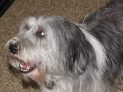
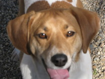
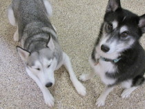

Recent Blog Posts
Winter Wolf Ecology Workshop 2014
Feb 1, 2014
February in northern Wisconsin is not most couple's idea of a "getaway." But, if you are Lynn and Peter (Wunderli), you might beg to differ!
Both Peter and I share a love for outdoor winter sports, and have a great respect and enthusiasm about protection of our natural resour...
Read more...In The News...
Jul 14, 2012
Lynn presented "CBADDC" (Canine Behavior and Doggie Day Care) at the popular New England Pet Grooming Professionals (NEPGP) Summerfest in Warwick, RI on July 14, 2012. While attending and presenting, Lynn was taken by surprise to find out her clients, had voted her TOP DOG in NEPGP'...
Read more...Services
Recent Testimonials
Ann B., Windham, NH
I've known Lynn (and her whole family) long before I got my Rosie, (a neurotic, Polish Lowland Sheepdog that I adopted at age 2 1/2 years). Rosie came with issues, for which Lynn has been a fabulous resource and source of great advice. In addition, Rosie looks fabulous after every grooming. H... More...
Carmen and Victoria F., Chester, NH
Lynn Wunderli has cared for our little guy for over 2 years now and she has taught he and us so much about the precious relationship between people and their pets. Lynn has a day care that is more than just a place for our dog to go. She teaches obedience and socialization skills as part of her d... More...
Dennis & Kim Rusch, Sandown, NH
To all pet owners:
My wife and I had never been dog owners before we found Nadia, a Siberian Husky, who we love very much. So as you can imagine we wanted to have a safe setting to take Nadia during the day while we worked. But it is so much more than that. At Wunderdog we met Lynn and her... More...